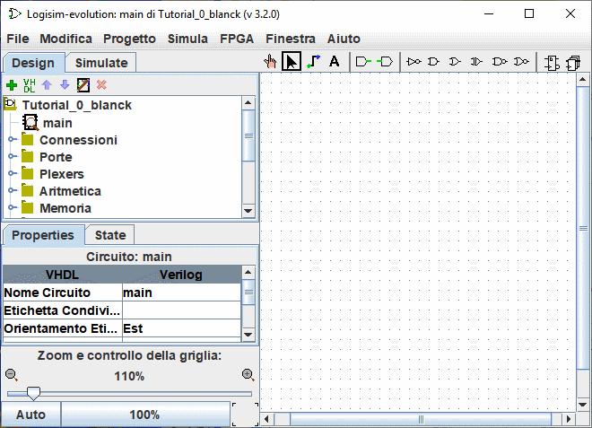

Precedente: Tutorial per iniziare
Passo 0: Orientamento
Quando si avvia Logisim, si vedrà una finestra simile alla seguente illustrazione. Alcuni dettagli possono essere leggermente diversi a seconda del sistema utilizzato.

Lo spazio Logisim è diviso in tre parti chiamate pannello di navigazione, la tabella degli attributi e la superficie di lavoro (o tela). Sopra queste tre parti si trovano la barra dei menu e la barra degli strumenti.

Possiamo mettere rapidamente da parte il pannello di navigazione e la tabella degli attributi: non li guarderemo in questo tutorial, e potrete semplicemente ignorarli. Inoltre, la barra dei menu è parzialmente autoesplicativa.
Abbiamo ancora la barra degli strumenti e la superficie di lavoro. La superficie di lavoro è lo spazio in cui disegnerete il vostro circuito e la barra degli strumenti contiene gli strumenti che ci permetteranno di arrivarci.